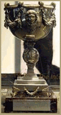
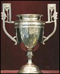

Copa Libertadores 1962, 1963 e 2011
Campeonato Brasileiro: Taça Brasil em 1961, 1962, 1963, 1964 e 1965; Torneio Roberto Gomes Pedrosa em 1968; e Série A em 2002 e 2004.
Torneio Rio-São Paulo 1959, 1963, 1964, 1966 e 1997
Campeonato Paulista 1935 (LPF), 1955, 1956, 1958, 1960, 1961, 1962, 1964, 1965, 1967, 1968, 1969, 1973, 1978, 1984, 2006, 2007, 2010, 2011, 2012, 2015 e 2016.
Torneio Inicio do Camp. Paulista 1928 (Apea), 1952, 1984
Taça Cidade de São Paulo 1949, 1970
Campeonato de Santos (Citadino) 1913, 1915 (* jogando com o nome de União), 1929
Torneios Internacionais
Torneio de Paris (França) 1960, 1961

